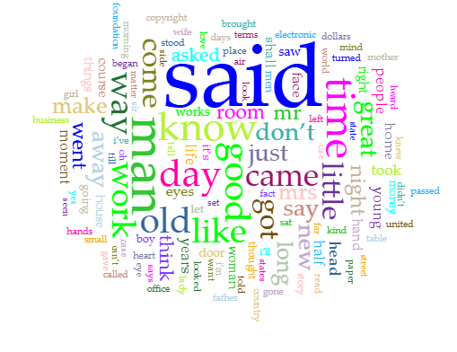

Text Analysis Project
The process of encoding texts from Project Gutenberg in XML and the exploration of aforementioned texts in Voyant Tools revealed many insights into the structure, themes, and rhetorical strategies of each work. These tools, while serving different functions (encoding for clarity on the texts and Voyant for surface-level analysis of the content's structure) complement each other, helping the reader gain a deeper understanding of the texts than they would have by simply reading.
Encoding each text in XML required attention to hierarchy of tags and the narrative function of what I was tagging. The act of tagging elements like
<dialogue>, <character>, and <def> forced me to line-by-line with each one of the texts, trying to spot out nuances often overlooked by the average reader. For instance, here's an excerpt of the encoding I used for one of my texts:
<dialogue>"The doctors agree in ordering me complete rest, an absence of mental excitement, and avoidance of anything in the nature of violent physical exercise,"</dialogue> announced <character name="Framton Nuttle">Framton</character>, who laboured under the tolerably widespread delusion that total strangers and chance acquaintances are hungry for the least detail of one’s ailments and infirmities, their cause and cure. <dialogue>"On the matter of diet they are not so much in agreement,"</dialogue> he continued.
The way I tagged not only identified where dialogue was happening, but also gave the name of the character speaking, helped me track who is saying what more closely. The repeated need to encode <dialogue> and <character> shows how dialogue-heavy the texts I chose are. The nature of the dialogue in these texts also vary, with some texts being dialogues between multiple characters in multiple situations and others being one-on-one conversations
While encoding helped me understand the structure of the texts, Voyant allowed me to see the bigger picture of the texts and allowed me to see patterns throughout the texts. Using Cirrus and Trends tools, I examined the frequency of different words throughout the texts. For example:

As you can see, the most common word across all of my texts is "said" (1570 instances), appearing nearly three times as often as the word in second place, "man" (538 instances). This serves as further proof as to how dialogue heavy short stories I chose to analyze are (The Lady or the Tiger is the only exception, being a story completely devoid of dialogue). Words used to describe time and age like time, old, young, new, night, and day were also very common. Here, Voyant Tools exposed some insights that only strengthened my interpretations of the text.
On the topic of interpretations, encoding is inherently subjective. I went in to these texts looking for absurdist and dark styles of humor that could be used as satirical criticisms of society and human nature. However, as I was encoding the texts, I started to realize how truly subjective humor is, and how there could be a few jokes that I am completely missing out to due to not living in the same society that the authors did. Of course, there were some obvious examples like:
"They fired again. Both missed their men this time, but I got my share, a shot in the arm. At the third fire both gentlemen were wounded slightly, and I had a knuckle chipped. I then said, I believed I would go out and take a walk, as this was a private matter, and I had a delicacy about participating in it further. But both gentlemen begged me to keep my seat, and assured me that I was not in the way."
Using Voyant for clarity didn't help much either, as none of the tools could help me match the tone of certain sentences in the context, especially when humor like this often doesn't have any written cues as to what is supposed to be funny and what isn't.
I also looked to tag words that may be confusing to the reader and added their description, adding further clarity to the texts. For example:
"Another door opened beneath the <character name="Semi-barbaric King">king</character>, and a priest, followed by a band of <def="A member of a choir">choristers, and dancing maidens blowing joyous airs on golden horns and treading an <def="a song honoring the bride/groom">epithalamic measure, advanced to where the pair stood, side by side, and the wedding was promptly and cheerily <def="to perform a ceremony with formality">solemnized.
Overall, I feel like I've learned much more about these texts their structure through encoding and Voyant Tools than I would if I had just read through them normally. I do feel like there was more to gather from encoding than Voyant Tools, but both were still valuable in enhancing my understanding of myt exts and corpus as a whole.